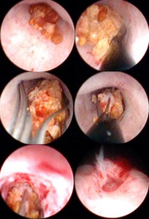

You are here: Urology Textbook > Surgery (procedures) > Ureteroscopy
Ureteroscopy: Endoscopic Examination of the Upper Urinary Tract
Indications for Ureteroscopy
- Abnormal imaging findings (obstruction, ureteral strictures, filling defects)
- Diagnosis of hematuria
- Diagnosis of pathologic urine cytology
- Diagnosis and treatment of ureteral stones and kidney stones
- Diagnosis or treatment of ureteral strictures
- Diagnosis and treatment of upper tract urothelial cancer
Contraindications to Ureteroscopy
Urinary tract infection, urosepsis, uncorrected bleeding diasthesis. Contraindications for lithotomy position.Equipment for Ureteroscopy
Semirigid ureteroscopes look like a long thin cystoscope, they have usually non-interchangeable lenses with 0–10 degrees angle of view. The working channel is 5 CH wide, there is a connection for inflow and outflow of irrigation. The thickness of a rigid ureteroscope is between 6–9 CH, thin at the tip with a gradual increase in diameter. Technical refinements have enabled semiregide ureteroscopes with 5–7 CH in diameter.
Flexible ureteroscopes are 8–10 CH in diameter, the working channel is thinner (CH 3) than in rigid ureteroscopes. Modern flexible ureteroscopes have an additional channel for irrigation. The tip of the flexible ureteroscope can be actively controlled with deflection up to 270 degrees [fig flexible ureteroscopy].
 |
Technique of Ureteroscopy
Preoperative Patient Preparation
- Exclusion or treatment of a urinary tract infection
- General anesthesia or spinal anesthesia is necessary
- Perioperative antibiotic prophylaxis
- Lithotomie position
Cystoscopy and Retrograde Pyelography
After cystoscopy a retrograde pyelography is done to evaluate the anatomy of the upper urinary tract and to review the indications for ureteroscopy. With help of a ureteral catheter, a guide wire is inserted up to the renal pelvis [fig. diagram of retrograde pyelography].
 |
Rigid Ureteroscopy
A narrow ostium makes the dilation of the prevesical ureter necessary [fig. dilatation of the distal ureter (left picture)]. Alternatively, the urinary tract can be dilated with the insertion of a DJ stents. The ureteroscopy is postponed for 2–4 weeks.
The ureteroscope is advanced along the urethra and guide wire, until the ostium is in sight. If the intubation of the orifice is technically difficult, a second guide wire or thin ureteral catheter may help [fig. entry of the distal ureter with the ureteroscope].
 |
The ureteroscope is advanced along the guide wire under direct vision into the ureter. The irrigation should be adjusted as low as possible. Kinking of the ureter can be straightened with the help of guide wires and ureteral catheters [fig. straightening a ureteral kinking during ureteroscopy].
 |
Flexible Ureteroscopy
After inserting the guide wire, an access sheath is inserted into the proximal ureter for easy entry of the flexible ureteroscope into the ureter, especially when a large stone burden is encountered. After advancing the flexible ureteroscope into the renal pelvis, every renal calyx is inspected [fig. flexible ureteroscopy].
Ureteroscopic Treatment of Urolithiasis
Extraction of ureteral stones with grasping forceps:
Small ureteral stones can be easily extracted with grasping forceps. Forceps for ureteroscopy are mostly reusable, their application is cheap.
Extraction of ureteral stones with Dormia baskets:
Ureteral stones, which are small enough to be extracted completely, can easily be removed with Dormia baskets [fig. extraction of ureteral stone with Dormia basket]. Major disadvantage of Dormia baskets are the costs of the disposable instrument.
First, the closed Dormia basket is advanced between stone and ureter wall. Beware of fixed ureteral stones, as the fragile ureteral wall can easily be perforated. Above the stone, the stone basket is opened and pulled back. With manipulation (e.g., rotating), the basket is manipulated around the ureteral stone. The stone basket is slowly closed until the stone is trapped within the basket. The ureteroscope is slowly withdrawn together with the basket, this is controlled with direct vision. The ureteral stone should glide along the urothelium. If the extraction with the stone basket is not possible due to size, proceed with lithotripsy of the stone (see below).
|  |
Lithotripsy of ureteral stones:
Larger ureteral stones cannot be extracted in toto, they need a lithotripsy in the ureter. Afterwards, the fragments can be removed.
The following possibilities for ureteroscopic lithotripsy exist:
- Electromechanical lithotripsy (e.g., Lithoclast)
- Electrohydraulic lithotripsy (EHL)
- Laser lithotripsy (e.g., Holmium)
Laser lithotripsy has the advantage of minimizing the trauma to the ureter and to reduce the stone dislocation during lithotripsy [fig. Holmium-Laser lithotripsy]. Furthermore, 3 CH-probes for flexible ureteroscopy are available. Depending on the energy source and settings, lithotripsy may produce small stone fragments, which are removed afterwards with a stone basket, or the ureteral stone is pulverized (stone dusting).
 |
Ureteroscopic Treatment Options for Strictures and Tumors
Ureteroscopic biopsy:
Biopsies should be taken from tumors or strictures of unknown etiology. For rigid or flexible ureteroscopes, there exist a varitey of biopsy forceps. The amount of resulting tissue with ureteroscopic biopsy is very small. Multiple biopsies are necessary, to obtain a reliable diagnosis.
Ablation of ureteral tumors:
Endoscopic palliative treatment of ureter or renal pelvis tumors is possible with ureteroscopic resectoscopes. Alternatively, tumor ablation is possible using laser coagulation.
Ureteroscopic incision of ureteral strictures:
see section ureteral strictures.
Stenting of the Ureter
After ureteroscopy, especially after longer manipulation, the placement of a DJ ureteral stent is necessary for 2–4 weeks. After perforation of the ureter, a bladder catheter (for a few days) and an DJ ureteral stent should be placed, to allow a pressure-free urine drainage. The placement of a DJ has been dispensed with success (in several randomized trials) after uncomplicated ureteroscopy (e.g., after ureteral stone extraction).
Complications of Ureteroscopy
- Perforation of the ureter (2–10%), urinoma, stricture of the ureter, very rare: avulsion of the ureter.
- Urinary tract infection, urosepsis
- Bleeding
- Hydronephrosis after ureteroscopy because of edema of the ureter, blood clots, residual stones or injury of the ureter.
| Urologic Surgery | Index | Open pyeloplasty |
Index: 1–9 A B C D E F G H I J K L M N O P Q R S T U V W X Y Z
References
Christiano u.a. 2000 CHRISTIANO, A. P. ; HOLLOWELL, C. M. ; KIM, H. ; KIM, J. ; PATEL, R. ; BALES, G. T. ; GERBER, G. S.: Double-blind randomized comparison of single-dose ciprofloxacin versus intravenous cefazolin in patients undergoing outpatient endourologic surgery.In: Urology
55 (2000), Nr. 2, S. 182–5
Knopf u.a. 2003 KNOPF, H. J. ; GRAFF, H. J. ;
SCHULZE, H.:
Perioperative antibiotic prophylaxis in ureteroscopic stone removal.
In: Eur Urol
44 (2003), Nr. 1, S. 115–8
 Deutsche Version: Harnleiterspiegelung
Deutsche Version: Harnleiterspiegelung